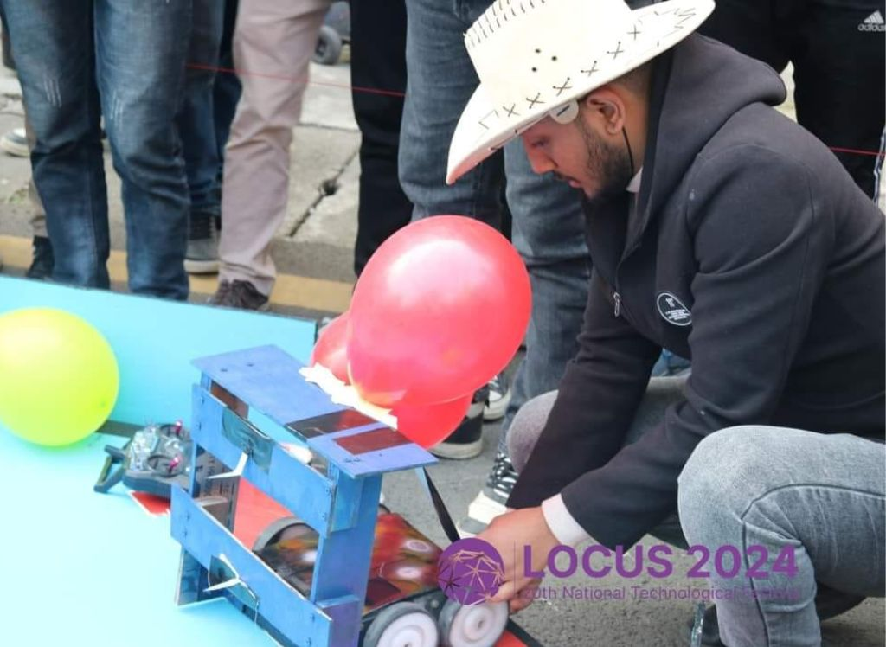

Robo Pop

Robo Pop is a unique robotic challenge where the robot must burst balloons using a controlled weapon system. Designed for both
accuracy and agility, the bot can navigate the arena, identify target balloons, and use a mechanical popper to destroy them before
competitors. The robot was developed for time-bound offensive performance.
Technologies Used
- 🯠Task: Burst multiple balloons within a set time
- ğŸ› ï¸ Mechanism: Spring-loaded or servo-triggered needle actuator
- 🧠Controller: Arduino UNO
- 🛠Mobility: 4WD base with fast-turning capabilities
- 🔋 Power: 11.1V LiPo Battery
GitHub Repository
View on GitHub
Project Report
Gallery
← Back to Projects